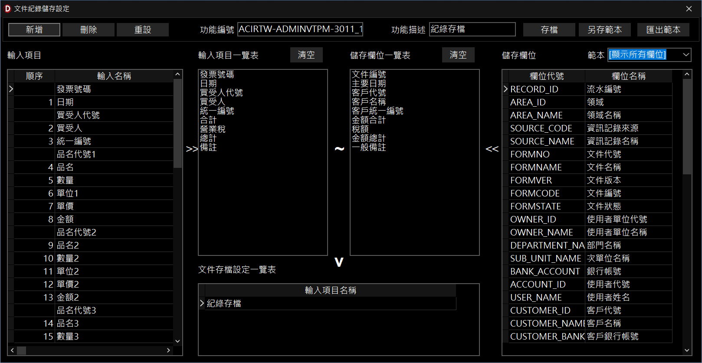

文件紀錄儲存設定
本功能用於設定 InfoRec 軟體（以下簡稱 InfoRec）在進行文件列印或存檔時，能將畫面上的輸入項目正確存入指定的資料庫欄位，以供後續查詢與報表分析使用。
一、 功能介面概述
-
輸入項目與一覽表：
- 「輸入項目」：顯示當前文件畫面上所有的資料輸入欄位（如發票號碼、日期、買受人等）。
- 「輸入項目一覽表」：指定哪些輸入欄位是準備要存入資料庫的項目。
-
儲存欄位與一覽表：
- 「儲存欄位」：系統提供可用來存檔的資料庫標準欄位。
- 「儲存欄位一覽表」：從標準欄位中選出來，準備與輸入項目進行對應的儲存位置。
-
文件存檔設定一覽表：
- 下方顯示目前已建立的紀錄存檔設定組合，方便管理與快速切換。
二、 基本操作步驟
-
建立新設定：
- 點擊上方工具列的「新增」按鈕，並於「功能描述」欄位輸入此設定的名稱（例如：紀錄存檔）。
-
選取存檔與儲存項目：
- 選取左側「輸入項目」後點擊
>> 放入一覽表。
- 選取右側「儲存欄位」後點擊
<< 放入一覽表。
-
欄位項目對應：
- 確認兩邊一覽表的項目順序一致，點擊中間的
~ 按鈕，將對應關係綁定並由下方「V」確認儲存。
-
儲存設定：
- 確認對應關係無誤後，點擊上方工具列的「存檔」按鈕即可完成整個設定流程。
三、 尋求協助
- 若在設定對應欄位時遇到異常，將無法順利建立存檔紀錄，請聯絡系統管理人員進行確認。

文件紀錄儲存設定視窗